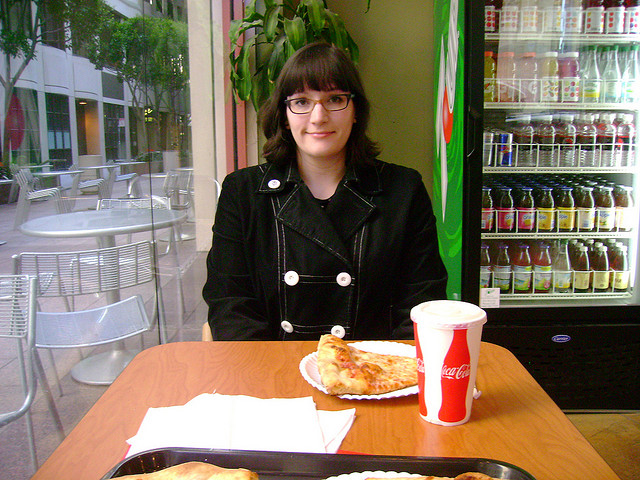

Reference Chains
Refer, Reuse, Reduce: Grounding Subsequent References in Visual and Conversational Contexts
In PhotoBook, participants can freely interact via chat so the dialogues include different types of dialogue act. In Refer, Reuse, Reduce: Grounding Subsequent References in Visual and Conversational Contexts, we concentrate on a specific type of dialogue contribution, referring utterances, so we extract all messages that contain an image description and their corresponding image target from the PhotoBook dialogues. The extraction procedure is described in our paper and the corresponding code is on our GitHub repository. The result of this procedure is a new dataset of reference chains made up of 41,340 referring utterances and 16,525 chains. You can download the dataset here.
The PhotoBook Dataset: Building Common Ground through Visually Grounded Dialogue
Segmentation Heuristics
Collecting reference chains from dialogue data is a non-trivial task which normally requires manual annotation. In The PhotoBook Dataset: Building Common Ground through Visually Grounded Dialogue, we propose a simple procedure to automatically extract reference chains made up of dialogue segments. A dialogue segment is defined as a collection of consecutive utterances that, as a whole, discuss a given target image and include expressions referring to it. All dialogue segments within a game that refer to the same target image form its reference chain. In order to automatically segment the collected dialogues in this way, we developed a rule-based heuristics exploiting participants’ image labelling actions to detect segment boundaries and their respective targets.Due to the spontaneous and unrestricted nature of the PhotoBook dialogues, participant labelling actions do not always indicate segment boundaries as cleanly as possible. To improve the quality of extracted dialogue segments and reference chains, we therefore developed a more context-sensitive heuristics to automate segmentation. The heuristics is implemented as a binary decision tree that uses labelling actions as well as any preceding and subsequent messages and additional labelling actions to better decide on segment boundaries and associated target images. It considers 32 combinations of eight different factors. The first case of the heuristics, for example, states that if
- the current turn is a message,
- the previous turn was an image labelling action,
- the previous turn was by the other participant,
- the next turn is an image selection action,
- the next turn is by the current participant,
- the next labelling action assigns a common label,
- the other participant’s previous labelling and the current participant’s next labelling address the same target image, and
- there is a non-empty, currently developing dialogue segment,
The full heuristics can be viewed here.
The files necessary to replicate the automatic extraction of segment chains can be downloaded from github here, or as a zipped archive here. To execute the files, place the
log folder into the project's data folder. Further documentation can be found here. Sample Segment Chain
The following shows a typical example of an automatically extracted chain of dialogue segments associated with the following image:
B: Hello
A: Hi
A: Do you have a woman with a black coat with buttons, glasses and a piece of pizza on table
B: no
A: Lady with black shirt, glasses with pizza on table?
B: yes
A: Table with orange bowl with lemons and liquor, cups?
B: no
A: Orange bowl with lemons, liquor?
B: lady pizza
A: No lady pizza
B: yes
B: woman and pizza
A: Empty kitchen wood coloured cabinets?
A: No woman pizza
B: no
Segmentation Evaluation and Validation
72% of the extracted segments are linked to only one target; 25% to two. Moreover, reference chains do not necessarily contain one segment for each of the five game rounds. They may contain fewer or more segments than rounds in a game, since participants may discuss the same image more than once in a single round and some of the extracted chains may be noisy, as explained in the evaluation section below. 75% of the automatically extracted chains contain three to six segments.To evaluate the segmentation, two annotators independently reviewed segments extracted from 20 dialogues. These segments were annotated by marking all utterances u in a segment S with target images I that refer to an image i0 where i0 ∈ I to determine precision, and marking all directly preceding and succeeding utterances u0 outside of a segment S that refer to a target image i ∈ I to determine recall. Additionally, if a segment S did not include any references to any of its target images I, it was labelled as improper. 95% of annotated segments were assessed to be proper (Cohen’s κ of 0.87), with 28.4% of segments containing non-target references besides target references (Cohen’s κ of 0.97). Recall across all reviewed segments is 99% (Cohen’s κ of 0.93).
Segment Chain Data Set
The automatically extracted co-reference chains per target image were split into three disjoint sets for training (70%), validation (15%) and testing (15%), aiming at an equal distribution of target image domains in all three sets. The raw numbers per data split are shown in the following table:| Split | Chains | Segments | Targets | Non-Targets |
|---|---|---|---|---|
| Train | 12,694 | 30,992 | 40,898 | 226,993 |
| Val | 2,811 | 6,801 | 9,070 | 50,383 |
| Test | 2,816 | 6,876 | 9,025 | 49,774 |
log folder into the project's data folder. Further documentation can be found here. The produced output files can be found here.